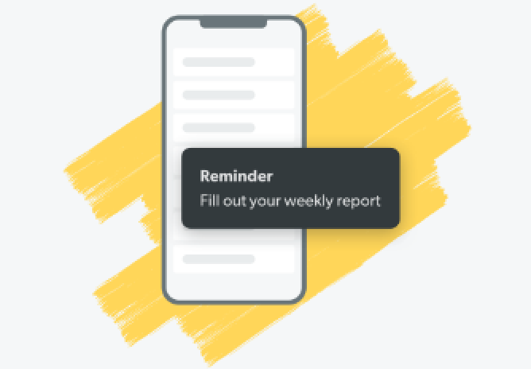
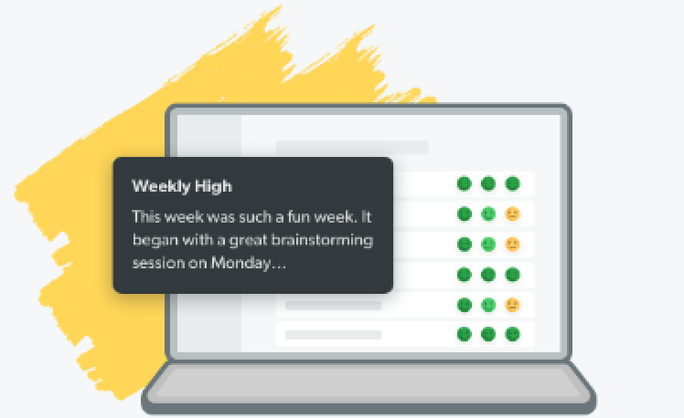

When they receive your invitation, team members will be prompted to
complete their profiles. If a team member hasn't created their profile
within 24 hours, follow up with them!
Remind Your Team
Every Friday, we'll automatically send your team members an email
reminding them to fill out their Weekly Report. But we also encourage
you to consistently request their Weekly Reports so they realize the
importance of this new habit.


Read Their Reports
Set aside some time on Monday to read all the reports. Then reach out to
any team members who need to be acknowledged for a success or supported
during difficult time. (And yes, we'll send you a reminder to read your
reports each week too.)